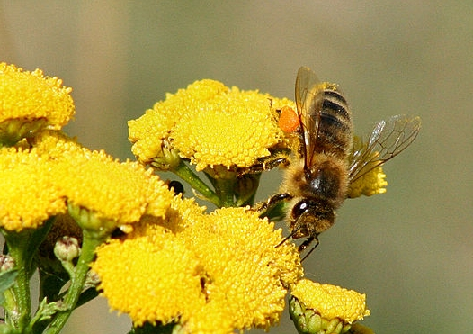

(podstawowe wiadomości, głównie dla dzieci, ale nie tylko...)
napisał Zenon Ciechanowicz
Giżycko 2013
Dawno, dawno temu... w telewizji dzieci oglądały piękna bajkę o Pszczółce Mai i jej letnich przygodach. Pszczółka była na tyle sympatyczna, a jej przygody na tyle interesujące, że przed ekranami telewizorów usadawiały się nie tylko dzieci, ale często również dorośli.
Ta opowieść będzie również o pszczółce, jednak bezimiennej, mieszkającej w prawdziwym ulu. Główna różnica między pszczółką z ula na pasieczysku, a bajkową polega na tym, że prawdziwa pszczoła zajmuje się noszeniem miodu, a bajkowa Maja tym się nie interesowała...
W Pszczółce Mai wiele treści, np zwyczaje owadów, rośliny były przedstawione zgodnie z prawdą, ale my tu nie o tym.

Ul to domek, w którym żyją pszczoły, dzięki którym na naszych stołach pojawia się pożywny smakołyk, zwany miodem. Miejsce, w którym stoją ule, nazywa się pasieką. Osoba, która troszczy się o pszczoły, spędza przy nich wiele godzin, wie o ich życiu bardzo dużo, to pszczelarz. Miód to słodki, wspaniały przysmak. Warto nim smarować chleb jak najczęściej, tym bardziej, że nie szkodzi na zęby, odwrotnie zapobiega próchnicy.
Zapoznanie się z tą krótką opowieścią nie zrobi z czytelnika pszczelarza, ale przynajmniej w sposób bardzo ogólny zapozna z życiem pszczół i z tym, w jaki sposób i skąd się pojawia w ulach miód. Zapoznajmy się więc z życiem pszczół, bo są to owady, które prowadzą zaskakująco ciekawy tryb życia, ciężko pracują w zorganizowanej wielotysięcznej grupie, a z efektów ich pracy korzysta też człowiek. Prawdziwa pszczółka nie prowadzi tak beztroskiego życia jak Pszczółka Maja, lata celowo, wraca do ula obładowana słodkim nektarem, z którego powstaje bursztynowy miód. Skąd autor o tym wie? Od ponad pół wieku zajmuje się pszczołami, a ponadto o pszczołach przeczytał wiele różnych książek. Wie, że pszczoły, w krótkim czasie po wydostaniu się z komórki, przystępują do pracy i tak spędzają całe swe życie.
cdn...
pszczoła z pyłkiem w "koszyczku" (na nóżce){kind=link}